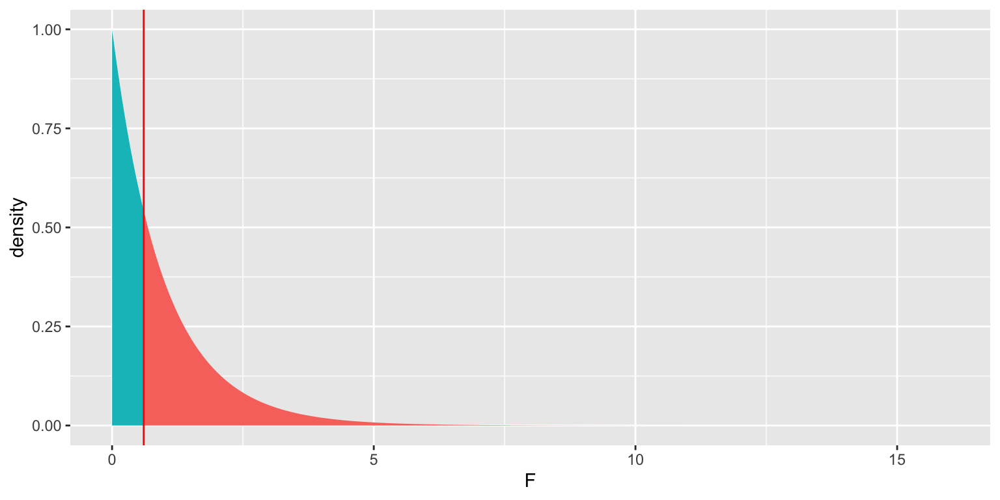
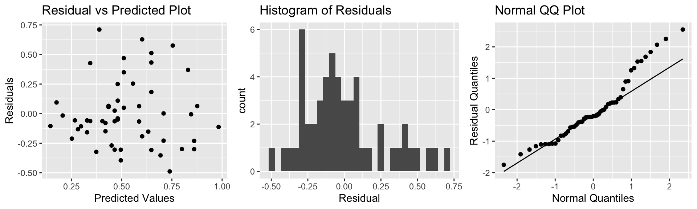

Chapter 5 Normal Error Regression Model
Learning Outcomes:
Explain when it is appropriate to use “theory-based†standard error formulas.
Interpret estimates, standard errors, test statistics, and p-values resulting from linear model output in R.
List the assumptions made in the normal error regression model.
Calculate p-values corresponding to t-statistics and F-statistics in R.
Interpret confidence intervals for an expected response, and prediction intervals, and distinguish between these two types of intervals.
Assess the whether linear model assumptions are reasonably satisfied, using residual plots, histograms, and normal QQ plots.
Explain when we should or should not expect p-values and confidence intervals obtained via “theory-based†approaches to agree with those obtained via simulation.
Identify situations where a log transformation of the response variable is appropriate.
Calculate predicted values for models involving a log transformation of the response variable.
Interpret regression coefficients in models involving a log transformation of the response variable.
Explain the regression effect.
5.1 The Normal Error Regression Model
You’ve probably noticed that many (though not all) of the distributions of statistics associated with permutation-based hypothesis tests in Chapter 3 and bootstrap confidence intervals in Chapter 4 were symmetric and bell-shaped in nature. We also saw in Section 4.4 that certain statistics, such as differences in means, and regression coefficients have known standard error formulas, allowing us to approximate their standard errors without performing simulation.
When working with statistics that have symmetric and bell-shaped distributions and know standard error formulas, it is possible to use well-known probability facts to obtain confidence intervals and perform hypothesis tests without actually performing the simulation seen in Chapters 3 and 4. In order to be able to use these facts, however, we must know that the sampling distribution of our statistic is in fact symmetric and bell-shaped. One way to know that would be to actually perform the simulations and check the shape of the distribution. This, of course, would defeat the purpose of bypassing the simulations, however.
In this chapter, we’ll examine ways to check whether a statistic such as a mean, regression slope, or expected response will follow a symmetric and bell-shaped sampling distribution, without actually having to perform a simulation. For situations where the statistic does follow such a distribution, we’ll examine methods for obtaining confidence intervals and p-values, based on probability theory, rather than simulation.
5.1.1 Example: Ice Cream dispenser

Suppose an ice cream machine is manufactured to dispense 2 oz. of ice cream per second, on average. If 15 people used the ice cream machine, holding the dispenser for different amounts of time, and each person got exactly 2 oz. per second, the relationship between time holding the dispenser and amount dispensed would look like this:

In reality, however, the actual amount dispensed each time it is used will vary due to unknown factors like:
- force applied to dispenser
- temperature
- build-up of ice cream
- other unknown factors
Thus, if 15 real people held the dispenser and recorded the amount of ice cream they got, the scatter plot we would see would look something like this:

5.1.2 Signal and Noise
We can think of the amount of ice cream a person receives as being a result of two separate components, often referred to as signal and noise.
Signal represents the average amount of ice cream a person is expected to receive based on the amount of time holding the dispenser. In this case, signal is given by the function \(\text{Expected Amount} = 2\times\text{Time}\). Everyone who holds the dispenser for \(t\) seconds is expected to receive \(2t\) ounces of ice cream.
Noise represents how much each person’s actual amount of ice cream deviates from their expected amount. For example, a person who holds the dispenser for 1.5 seconds and receives 3.58 oz. of ice cream will have received 0.58 ounces more than expected due to noise (i.e. factors beyond time holding the dispenser).
In a statistical model, we assume that the response value of a response variable we observe is the sum of the signal, or expected response, which is a function of the explanatory variables in the model, and noise, which results from deviations due to factos beyond those accounted for in the model.
5.1.3 Normal Distribution
It is common to model noise using a symmetric, bell-shaped distribution, known as a normal distribution.
We can think of the error term as a random draw from somewhere in the area below the bell-curve. For example, in the above illustration, most of the area under the curve lies between \(-1\leq x\leq 1\). If this curve represented the noise term in the ice cream example, it would mean that most people’s actual amount of ice cream dispensed would be within \(\pm 1\) ounce of their expected amount (or signal). Notice that the normal distribution is centered at 0, indicating that on average, a person would be expected to get an amount exactly equal to their signal, but that they might deviate above or below this amount by unexplained factors, which can be modeled by random chance.
A normal distribution is defined by two parameters:
- \(\mu\) representing the center of the distribution
- \(\sigma\) representing the standard deviation
This distribution is denoted \(\mathcal{N}(\mu, \sigma)\).

When the standard deviation is small, such as for the blue curve, noise tends to be close to 0, meaning the observed values will be close to their expectation. On the other hand, the green curve, which has higher standard deviation, would often produce noise values as extreme as \(\pm 2\) or more.
Note that the square of the standard deviation \(\sigma^2\) is called the variance. Some books denote the normal distribution as \(\mathcal{N}(\mu, \sigma^2)\), instead of \(\mathcal{N}(\mu,\sigma)\). We will use the \(\mathcal{N}(\mu,\sigma)\) here, which is consistent with R.
5.1.4 Signal and Noise in Icecream Example
In this example, we’ll simulate the amount of ice cream dispensed for each person by adding a random number from a normal distribution with mean 0 and standard deviation 0.5 to the expected amount dispensed, which is given by \(2x\), where \(x\) represents time pressing the dispenser. We’ll let \(\epsilon_i\) represent the random noise term for the \(i\) person.
Thus, amount dispensed (\(Y_i\)) for person \(i\) is given by
\[Y_i = 2x_i+\epsilon_i, \text{ where } \epsilon_i\sim\mathcal{N}(0, 0.5) \]
We simulate the amount dispensed for a sample of 15 people below.
set.seed(10082020)
# set times
time <- c(1, 1.2, 1.5, 1.8, 2.1, 2.1, 2.3, 2.5, 2.6, 2.8, 2.9, 2.9, 3.1, 3.2, 3.6)
expected <- 2*time # expected amount
noise <-rnorm(15, 0, 0.5) %>% round(2) #generate noise from normal distribution
amount <- 2*time + noise # calculate observed amounts
Icecream <- data.frame(time, signal, noise, amount) # set up data table
kable((Icecream)) #display table| time | signal | noise | amount |
|---|---|---|---|
| 1.0 | 2.0 | 0.23 | 2.23 |
| 1.2 | 2.4 | -0.49 | 1.91 |
| 1.5 | 3.0 | 0.58 | 3.58 |
| 1.8 | 3.6 | -0.03 | 3.57 |
| 2.1 | 4.2 | 0.17 | 4.37 |
| 2.1 | 4.2 | -0.93 | 3.27 |
| 2.3 | 4.6 | 0.05 | 4.65 |
| 2.5 | 5.0 | -0.37 | 4.63 |
| 2.6 | 5.2 | -0.46 | 4.74 |
| 2.8 | 5.6 | 0.17 | 5.77 |
| 2.9 | 5.8 | -0.59 | 5.21 |
| 2.9 | 5.8 | 0.12 | 5.92 |
| 3.1 | 6.2 | 0.00 | 6.20 |
| 3.2 | 6.4 | 0.67 | 7.07 |
| 3.6 | 7.2 | 0.05 | 7.25 |
The scatterplot displays the amount dispensed, compared to the time pressing the dispenser. The red line indicates the line \(y=2x\). If there was no random noise, then each person’s amount dispensed would lie exactly on this line.
ggplot(data=Icecream1, aes(x=time, y=amount)) + geom_point() + ggtitle("Icecream Dispensed") + xlab("Time Pressing dispenser") + ylab("Amount Dispensed") + geom_abline(slope=2, intercept=0, color="red") +
annotate("text", label="y=2x", x= 3.5, y=6.5, size=10, color="red")
In a real situation, we would not see the signal and noise columns in the table or the red line on the graph. We would only see the time and amount, and points on the scatter plot. From these, we would need to estimate the location of the red line by fitting a least squares regression line to the data, as we’ve done before.
The blue line represents the location of the least squares regression line fit to the time and amounts observed.
ggplot(data=Icecream1, aes(x=time, y=amount)) + geom_point() + ggtitle("Icecream Dispensed") + xlab("Time Pressing dispenser") + ylab("Amount Dispensed") + stat_smooth(method="lm", se=FALSE) + geom_abline(slope=2, intercept=0, color="red") +
annotate("text", label="y=2x", x= 3.5, y=6.5, size=10, color="red") The blue line is close, but not identical to the red line, representing the true (usually unknown) signal.
The blue line is close, but not identical to the red line, representing the true (usually unknown) signal.
The slope and intercept of the blue line are given by:
IC_Model <- lm(data=Icecream1, lm(amount~time))
IC_Model##
## Call:
## lm(formula = lm(amount ~ time), data = Icecream1)
##
## Coefficients:
## (Intercept) time
## -0.1299 2.0312Notice that these estimates are close, but not identical to the intercept and slope of the red line, which are 0 and 2, respectively.
The equation of the red line is given by:
\(Y_i = \beta_0 + \beta_1X_{i} + \epsilon_i\), where \(\epsilon_i\sim\mathcal{N}(0,\sigma)\),
where \(Y_i\) represents amount dispensed, and \(X_i\) represents time. \(\beta_0, \beta_1,\), and \(\sigma\) are the unknown model parameters associated with the ice cream machine’s process.
Using the values of \(b_0\) and \(b_1\) obtained by fitting a model to our observed data as estimates of \(\beta_0\) and \(\beta_1\), our estimated regression equation is
\[Y_i = b_0 + b_1X_i + \epsilon_i = -0.1299087 + 2.0312489X_i + \epsilon_i \]
where \(\epsilon_i\sim\mathcal{N}(0,\sigma)\).
An estimate for \(\sigma\) is given by
\(s =\sqrt{\frac{\text{SSR}}{n-(p+1)}} = \sqrt{\frac{\displaystyle\sum_{i=1}^n(y_i-\hat{y}_i)^2}{(n-(p+1))}}\).
We calculate this estimate of \(\hat{\sigma}\), using R.
s <- sqrt(sum(IC_Model$residuals^2)/(15-2))
s## [1] 0.4527185The estimates of \(b_0 = -0.1299087\), \(b_1=2.0312489\), and \(s = 0.4527185\) are resonably close estimates to the values \(\beta_0=0, \beta_1=2\), and \(\sigma = 0.5\), that we used to generate the data.
In a real situation, we’ll have only statistics \(b_0\), \(b_1\), and \(s\), and we’ll need to use them to draw conclusions about parameters \(\beta_0=0, \beta_1=2\), and \(\sigma = 0.5\).
5.1.5 Normal Error Regression Model
In the ice cream example, the relationship between expected amount and time holding the dispenser was given by a linear equation involving a single numeric explanatory variable. We can generalize this to situations with multiple explanatory variables, which might be numeric or categorical.
Individual observations are then assumed to vary from their expectation in accordance with a normal distribution, representing random noise (or error).
The mathematical form of a normal error linear regression model is
\(Y_i = \beta_0 + \beta_1X_{i1}+ \ldots + \beta_pX_{ip} + \epsilon_i\), with \(\epsilon_i\sim\mathcal{N}(0,\sigma)\).
Note that in place of \(X_{ip}\), we could have indicators for categories, or functions of \(X_{ip}\), such as \(X_{ip}^2\), \(\text{log}(X_{ip})\), or \(\text{sin}(X_{ip})\).
The quantities \(\beta_0, \beta_1, \ldots, \beta_p\) are parameters, pertaining to the true but unknown data generating mechanism.
The estimates \(b_0, b_1, \ldots, b_p\), are statistics, calculated from our observed data.
We use confidence intervals and hypothesis tests to make statements about parameters, based on information provided by statistics.
5.1.6 Examples of Normal Error Regression Model
We can formulate all of the examples we’ve worked with so far in terms of the normal error regression model.
In the house price example, consider the following models:
Model 1: \(\text{Price}_i = \beta_0 + \beta_1\text{Sq.Ft.}_{i} + \epsilon_i\), where \(\epsilon_i\sim\mathcal{N}(0,\sigma)\). If we use this model, we’re saying that we believe the expected price of a house is a linear function of its size, and that for any given size, the distribution of actual prices are normally distributed around their expected value of \(\beta_0 + \beta_1\text{Sq.Ft.}_{i}\).
Model 2:
\(\text{Price}_i = \beta_0 + \beta_2\text{Waterfront}_{i}+ \epsilon_i\), where \(\epsilon_i\sim\mathcal{N}(0,\sigma)\).
If we use this model, we’re saying that we believe the expected price of a house depends only on whether or not it is on the waterfront, and that prices of both waterfront and non-waterfront houses follow normal distributions, though these distributions may have different means (\(\beta_0\) for non-waterfront houses, and \(\beta_1\) for waterfront houses).
Model 3:
\(\text{Price}_i = \beta_0 + \beta_1\text{Sq.Ft.}_{i}+ \beta_2\text{Waterfront}_{i}+ \beta_3\times\text{Sq.Ft.}_i\times\text{Waterfront}_{i} + \epsilon_i\), where \(\epsilon_i\sim\mathcal{N}(0,\sigma)\).
and
Model 4: \(\text{Price}_i = \beta_0 + \beta_1\text{Sq.Ft.}_{i}+ \beta_2\text{Waterfront}_{i}+ \beta_3\times\text{Sq.Ft.}_i\times\text{Waterfront}_{i} + \epsilon_i\), where \(\epsilon_i\sim\mathcal{N}(0,\sigma)\).
Both models assume that actual prices of houses with the same size and waterfront status are normally distributed, and that the mean of the normal distribution is a linear function of its size. Model 3 allows for the intercept of the lines to differ between waterfront and non-waterfront houses, while Model 4 allows both the intercept and slope to differ.
5.1.7 Implications of Normal Error Regression Model
If we really believe that data come about as the normal error regression model describes, then probability theory tells us that regression coefficients \(b_j\)’s, representing differences between categories for categorical variables and rates of change for quantitative variables, follow symmetric and bell-shaped distributions. We can use this fact, along with the standard error formulas in Section 4.4 to create confidence intervals and perform hypothesis tests, without needing to perform simulation. This is, in fact what R does in it’s model summary output.
These methods are only valid, however, if data can reasonably be thought of as having come the normal error regression model process. Thus, if we don’t believe that our observed data can be reasonably thought of terms representing underlying signal as a linear function of explanatory variables, and a normally distributed random error (or noise) term, then the confidence intervals and p-values produced by R, and other places that rely on probability-based methods will not be reliable.
5.1.8 Philosophical Question
We close the section with a philosophical question:
Do data really come about from processes like the normal error regression model? That is, do you think it is reasonable to believe that data we see in the real world (perhaps the amount of ice cream dispensed by an ice cream machine) is a combination of some true, but unknown equation involving the explanatory and response variables, and some unexplained noise, coming from a normal distribution?
We won’t attempt to answer that question here, but it is worth thinking about. After all, it is an assumption on which many frequently employed methods of statistical inference depends.
5.2 Inference in Normal Error Regression Model
When data can reasonably be assumed to have come from a process consistent with the normal error regression model, we can perform hypothesis tests and make confidence intervals for regression coefficients \(\beta_j\)’s, (which represent slopes or differences in means), using probability-based methods rather than simulation. This is done in the R output for the lm summary command.
5.2.1 lm summary Output
The summary command for a linear model in R displays a table including 4 columns.
Linear Model summary() Output in R
Estimate gives the least-squares estimates \(b_0, b_1, \ldots, b_p\)
Standard Error gives estimates of the standard deviation in the sampling distribution for estimate. (i.e. how much uncertainty is there about the estimate?) These are computed using the formulas in Section 4.4.
t value is the estimate divided by its standard error.
Pr(>|t|) is a p-value for the hypothesis test associated with the null hypothesis \(\beta_j = 0\), where \(\beta_j\) is the regression coefficient pertaining to the given line. Note that \(\beta_j\) is the unknown population parameter estimated by \(b_j\).
The Residual Standard Error is \(s =\sqrt{\frac{\text{SSR}}{n-(p+1)}} = \sqrt{\frac{\displaystyle\sum_{i=1}^n(y_i-\hat{y}_i)^2}{(n-(p+1))}}\). This is an estimate of \(\sigma\), which represents the standard deviation in the distribution of the response variable for given value(s) or category(ies) of explanatory variable(s).
The degrees of freedom are \(n-(p+1)\).
The Multiple R-Squared value is the \(R^2\) value seen in Chapter 2. \(R^2 = \frac{\text{SST} -\text{SSR}}{\text{SST}} = \frac{\displaystyle\sum_{i=1}^n(y_i-\hat{y}_i)^2}{\displaystyle\sum_{i=1}^n(y_i-\bar{y}_i)^2}\)
We know that \(R^2\) can never decrease when additional variables are added to a model. The Adjusted-R^2 value is an alternate version of \(R^2\) that is designed to penalize adding variables that do little to explain variation in the response. Adjusted \(R^2\) can decrease as additional variables are added to a model. We’ll learn more about adjusted \(R^2\) in Chapter 7.
The F-statistic on the bottom line of the R-output corresponds to an F-test of the given model against a reduced model that include no explanatory variables. The p-value on this line is associated with the test of the null hypothesis that there is no relationship between the response variable and any of the explanatory variables. Since SSR for this reduced model is equal to SST, the F-statistic calculation simplifies to:
\[ F=\frac{\frac{SST - SSR}{p}}{\frac{SSR}{n-(p+1)}} \]
The degrees of freedom associated with the F-statistic are given by \(p\) and \((n-(p+1))\).
Example: Northern vs Southern Florida Lakes
Recall our linear model for mercury levels of lakes in Northern Florida, compared to Southern Florida.
The equation of the model is:
\[ \text{Mercury} = \beta_0+\beta_1\times\text{South} + \epsilon_i, \text{where } \epsilon_i\sim\mathcal{N}(0, \sigma) \]
We fit the model in R and display its summary output below.
Lakes_M <- lm(data=FloridaLakes, Mercury~Location)
summary(Lakes_M)##
## Call:
## lm(formula = Mercury ~ Location, data = FloridaLakes)
##
## Residuals:
## Min 1Q Median 3Q Max
## -0.65650 -0.23455 -0.08455 0.24350 0.67545
##
## Coefficients:
## Estimate Std. Error t value Pr(>|t|)
## (Intercept) 0.42455 0.05519 7.692 0.000000000441 ***
## LocationS 0.27195 0.08985 3.027 0.00387 **
## ---
## Signif. codes: 0 '***' 0.001 '**' 0.01 '*' 0.05 '.' 0.1 ' ' 1
##
## Residual standard error: 0.3171 on 51 degrees of freedom
## Multiple R-squared: 0.1523, Adjusted R-squared: 0.1357
## F-statistic: 9.162 on 1 and 51 DF, p-value: 0.003868The estimated regression equation is
\[ \text{Mercury} = 0.42455+0.27195\times\text{South}, \text{where } \epsilon_i\sim\mathcal{N}(0, \sigma) \]
- SSR is:
sum(Lakes_M$residuals^2)## [1] 5.126873- SST is:
sum((FloridaLakes$Mercury - mean(FloridaLakes$Mercury))^2)## [1] 6.047875- The residual standard error \(s\) is our estimate of \(\sigma\), the standard deviation among lakes in the same location (either Northern or Southern Florida).
\[ s =\sqrt{\frac{\text{SSR}}{n-(p+1)}} = \sqrt{\frac{\text{SSR}}{n-(p+1)}} = \sqrt{\frac{5.126873}{53-(1+1)}}=0.3171 \]
The degrees of freedom associated with this estimate is \(53-(1+1) = 51\).
- The Multiple R-Squared is:
\[ R^2 = \frac{6.047875 - 5.126873}{6.047875} = 0.1523 \]
- The F-statistic is
\[ F=\frac{\frac{SST - SSR}{p}}{\frac{SSR}{n-(p+1)}} = \frac{\frac{6.047875 - 5.126873}{1}}{\frac{5.126873}{53-(1+1)}} = 9.162 \]
This F-statistic is associated with 1 and 51 degrees of freedom.
Using formulas in Section 4.4.3, we obtain the standard error estimates for \(b_0\) and \(b_1\), given in the second column of the table.
\[ SE(b_0) = SE(\bar{x}_N)=s\frac{1}{\sqrt{n_{\text{North}}}} = \frac{0.3171}{\sqrt{33}} =0.0552 \]
\(SE(b_0)\) represents the variability in average mercury levels between different samples of 33 Northern Florida lakes.
\[ SE(b_1) = SE(\bar{x}_{South}-\bar{x}_{North})=s\sqrt{\frac{1}{n_{North}}+\frac{1}{n_{South}}} = 0.3171\sqrt{\frac{1}{20} + \frac{1}{33}} =0.0898 \]
\(SE(b_1)\) represents the variability in average difference in mercury levels between northern and southern lakes between different samples of 33 Northern Florida lakes and 20 Southern Florida lakes.
The last column, labeled “Pr(>|t|)†is, in fact a p-value associated with associated with the null hypothesis that the regression parameter on that line is zero. (i.e. \(\beta_j=0\)).
Hypothesis Test for line (intercept)
Null Hypothesis: The average mercury level among all lakes in North Florida is 0 (\(\beta_0=0\)).
Alternative Hypothesis: The average mercury level among all lakes in Northern Florida is not 0 (\(\beta_0\neq 0\)).
We already know the average mercury level among all lakes in North Florida is not 0, so this is a silly test.
Hypothesis Test for line LocationS
Null Hypothesis: There is no difference in average mercury levels between Northern and Southern Florida (\(\beta_1=0\)).
Alternative Hypothesis: There is a difference in average mercury levels in Northern and Southern Florida (\(\beta_1\neq 0\)).
This test is relevant to us.
R does not obtain these p-values through simulation, but rather by using the symmetric and bell-shaped t-distribution to approximate the distribution of these statistics. This is appropriate when the sampling distribution for our test statistic is reasonably symmetric and bell-shaped.
You’ve probably noticed that the sampling distributions in our permutation-based hypothesis tests, and our bootstrap distributions for regression coefficients have often been roughly symmetric and bell-shaped. When this happens, we can use a symmetric and bell-shaped distribution to model the distribution of a test statistic when the null hypothesis is true, bypassing the need to use simulation.
There is statistical theory which shows that if data really do come from the normal error regression model process, like the ice cream dispenser in the previous section, then the ratio of regression coefficients (means, differences in means, slopes) divided by their standard error, will follow a symmetric bell-shaped distribution called a t-distribution.
5.2.2 t-distribution
A t-distribution is a symmetric, bell-shaped curve, with thicker tails (hence more variability), than a \(\mathcal{N}(0,1)\) distribution. The t-distribution depends on a parameter called degrees of freedom, which determines the thickness of the distribution’s tails.

For data that come from a normal error regression model, we can use a t-distribution to approximate the sampling distribution used in our hypothesis tests, when the null hypothesis is assumed to be true.
Important Fact: If \(Y_i = \beta_0 + \beta_1X_{i1}+ \ldots + \beta_pX_{ip} + \epsilon_i\), with \(\epsilon_i\sim\mathcal{N}(0,\sigma)\), then
\[ t= \frac{{b_j}}{\text{SE}(b_j)} \]
follows a t-distribution.
The \(t=\frac{{b_j}}{\text{SE}(b_j)}\) is called a t-statistic.
We’ll use this t-statistic as the test statistic in our hypothesis test.
The degrees of freedom are given by \(n-(p+1)\), where \(p\) represents the number of terms in the model, not including the intercept.
5.2.3 Difference in Means Example
Recall the hypothesis test we performed to investigate whether there is a difference in average mercury level between lakes in Northern Florida and Southern Florida.
Null Hypothesis: There is no difference in average mercury levels between Northern and Southern Florida (\(\beta_1=0\)).
Alternative Hypothesis: There is a difference in average mercury levels in Northern and Southern Florida (\(\beta_1\neq 0\)).
Test Statistic: \(t=\frac{{b_j}}{\text{SE}(b_j)} = \frac{0.27195}{0.08985} = 3.027\)
Key Question: What is the probability of getting a t-statistic as extreme as 3.027 if \(\beta_1=0\) (i.e. there is no difference in mercury levels between northern and southern lakes).
We plot the t-statistic of 3.027 that we observed in our data and observe where it lies on a t-distribution.
ts=3.027
gf_dist("t", df=51, geom = "area", fill = ~ (abs(x)< abs(ts)), show.legend=FALSE) + geom_vline(xintercept=c(ts, -ts), color="red") + xlab("t")
2*pt(-abs(ts), df=51)## [1] 0.003866374The low p-value gives us strong evidence of a difference in average mercury levels between lakes in Northern and Southern Florida.
This is the p-value reported in R’s lm summary() output.
A t-statistic more extreme than \(\pm 2\) will roughly correspond to a p-value less than 0.05.
*Comparison to Simulation
Let’s compare these results to those given by the permutation test and bootstrap confidence interval.
Permutation Test
NSLakes_SimulationResultsPlot
p-value:
b1 <- Lakes_M$coef[2] ## record value of b1 from actual data
mean(abs(NSLakes_SimulationResults$b1Sim) > abs(b1))## [1] 0.00395.2.4 Simple Linear Regression Example
We examine the model summary output for the model predicting a lake’s mercury level, using pH as the explanatory variable.
M_pH <- lm(data=FloridaLakes, Mercury~pH)
summary(M_pH)##
## Call:
## lm(formula = Mercury ~ pH, data = FloridaLakes)
##
## Residuals:
## Min 1Q Median 3Q Max
## -0.48895 -0.19188 -0.05774 0.09456 0.71134
##
## Coefficients:
## Estimate Std. Error t value Pr(>|t|)
## (Intercept) 1.53092 0.20349 7.523 0.000000000814 ***
## pH -0.15230 0.03031 -5.024 0.000006572811 ***
## ---
## Signif. codes: 0 '***' 0.001 '**' 0.01 '*' 0.05 '.' 0.1 ' ' 1
##
## Residual standard error: 0.2816 on 51 degrees of freedom
## Multiple R-squared: 0.3311, Adjusted R-squared: 0.318
## F-statistic: 25.24 on 1 and 51 DF, p-value: 0.000006573The estimated regression equation is
\[ \text{Mercury} = 1.53 - 0.15 \times\text{pH}, \text{where } \epsilon_i\sim\mathcal{N}(0, \sigma) \]
- SSR is:
sum(M_pH$residuals^2)## [1] 4.045513- SST is:
sum((FloridaLakes$Mercury - mean(FloridaLakes$Mercury))^2)## [1] 6.047875- The residual standard error \(s\) is our estimate of \(\sigma\), the standard deviation among lakes with the same pH.
\[ s =\sqrt{\frac{\text{SSR}}{n-(p+1)}} = \sqrt{\frac{\text{SSR}}{n-(p+1)}} = \sqrt{\frac{4.045513}{53-(1+1)}}=0.2816 \]
The degrees of freedom associated with this estimate is \(53-(1+1) = 51\).
- The Multiple R-Squared is:
\[ R^2 = \frac{6.047875 - 4.045513}{6.047875} = 0.3311 \]
- The F-statistic is
\[ F=\frac{\frac{SST - SSR}{p}}{\frac{SSR}{n-(p+1)}} = \frac{\frac{6.047875 - 4.045513}{1}}{\frac{4.045513}{53-(1+1)}} = 25.24 \]
This F-statistic is associated with 1 and 51 degrees of freedom.
Using formulas in Section 4.4.3, we obtain the standard error estimates for \(b_0\) and \(b_1\), given in the second column of the table.
To do this, we need to calculate \(\bar{x}\) and \(\sum(x_i-\bar{x})^2\), where \(x\) represents the explanatory variable, \(pH\).
mean(FloridaLakes$pH)## [1] 6.590566sum((FloridaLakes$pH-mean(FloridaLakes$pH))^2)## [1] 86.32528\[ SE(b_0)=s\sqrt{\frac{1}{n}+\frac{\bar{x}^2}{\sum(x_i-\bar{x})^2}} = 0.2816\sqrt{\frac{1}{53} + \frac{6.59^2}{86.32528} } = 0.2034 \]
\(SE(b_0)\) represents the variability in mercury levels among lakes with pH of 0 between different samples of size 53. Since we don’t have any lakes with pH of 0, this is not a meaningful calculation.
\[ SE(b_1)=\sqrt{\frac{s^2}{\sum(x_i-\bar{x})^2}}=\sqrt{\frac{0.2816^2}{86.32528}} = 0.0303 \]
\(SE(b_1)\) represents the variability in rate of change in mercury level for each additional one unit increase in pH, between different samples of size 53. Hypothesis Test for Intercept Line
Null Hypothesis: The average mercury level among all Florida lakes with pH = 0 is 0. (\(\beta_0=0\)).
Alternative Hypothesis: The average mercury level among all Florida lakes with pH = 0 not 0. (\(\beta_0 \neq 0\)).
Since there are no lakes with pH level 0, this is not a meaningful test.
Hypothesis Test for pH Line
Null Hypothesis: There is no relationship between mercury and pH level among all Florida lakes. (\(\beta_1=0\)).
Alternative Hypothesis: There is a relationship between mercury and pH level among all Florida lakes. (\(\beta_1 \neq 0\)).
Test Statistic: \(t=\frac{{b_j}}{\text{SE}(b_j)} = \frac{-0.15230}{0.03031} = -5.024\)
ts=5.024
gf_dist("t", df=51, geom = "area", fill = ~ (abs(x)< abs(ts)), show.legend=FALSE) + geom_vline(xintercept=c(ts, -ts), color="red") + xlab("t")
2*pt(-abs(ts), df=51)## [1] 0.000006578117The p-value is extremely small, just as the simulation-based p-value we saw in Chapter 3.
5.2.5 Multiple Regression Example
We perform hypothesis tests on a model predicting house price using square feet and waterfront status as explanatory variables.
M_wf_sqft <- lm(data=Houses, price~sqft_living+waterfront)
summary(M_wf_sqft)##
## Call:
## lm(formula = price ~ sqft_living + waterfront, data = Houses)
##
## Residuals:
## Min 1Q Median 3Q Max
## -1363.79 -251.55 59.28 177.58 1599.72
##
## Coefficients:
## Estimate Std. Error t value Pr(>|t|)
## (Intercept) -407.6549 86.2868 -4.724 0.00000779668 ***
## sqft_living 0.4457 0.0353 12.626 < 0.0000000000000002 ***
## waterfrontYes 814.3613 124.8546 6.522 0.00000000313 ***
## ---
## Signif. codes: 0 '***' 0.001 '**' 0.01 '*' 0.05 '.' 0.1 ' ' 1
##
## Residual standard error: 412.7 on 97 degrees of freedom
## Multiple R-squared: 0.7607, Adjusted R-squared: 0.7558
## F-statistic: 154.2 on 2 and 97 DF, p-value: < 0.00000000000000022We won’t go through the standard error calculations here, though the details are given in the link provided in Section 4.4.
Intercept Line:
Null Hypothesis The average price among all non-waterfront houses with 0 square feet is 0 dollars. (\(\beta_0=0\))
This is not a sensible hypothesis to test.
sqft_living Line:
Null Hypothesis There is no relationship between price and square feet in a house, after accounting for waterfront status. (\(\beta_1=0\))
The large t-statistic (12.626) and small p-value provide strong evidence against this null hypothesis.
We know that a small p-value alone does not provide evidence of a relationship that is practically meaningful, but since our model estimates an expected 45 thousand dollar increase for each additional 100 square feet, this seems like a meaningful relationship.
waterfrontYes Line:
Null Hypothesis On average, there is no difference between average price of waterfront and non-waterfront houses, assuming they are the same size. (\(\beta_2=0\))
The large t-statistic (6.522) and small p-value provide strong evidence against this null hypothesis. Waterfront houses are estimated to cost 814 thousand dollars more, on average, than non-waterfront houses of the same size.
5.2.6 MR with Interaction Example
M_House_Int <- lm(data=Houses, price ~ sqft_living * waterfront)
summary(M_House_Int)##
## Call:
## lm(formula = price ~ sqft_living * waterfront, data = Houses)
##
## Residuals:
## Min 1Q Median 3Q Max
## -1559.34 -114.93 -30.24 131.09 1266.58
##
## Coefficients:
## Estimate Std. Error t value Pr(>|t|)
## (Intercept) 67.39594 91.39267 0.737 0.4627
## sqft_living 0.21837 0.04035 5.412 0.00000045752269 ***
## waterfrontYes -364.59498 180.75875 -2.017 0.0465 *
## sqft_living:waterfrontYes 0.43267 0.05566 7.773 0.00000000000857 ***
## ---
## Signif. codes: 0 '***' 0.001 '**' 0.01 '*' 0.05 '.' 0.1 ' ' 1
##
## Residual standard error: 325 on 96 degrees of freedom
## Multiple R-squared: 0.8531, Adjusted R-squared: 0.8486
## F-statistic: 185.9 on 3 and 96 DF, p-value: < 0.00000000000000022Intercept Line:
Null Hypothesis The average price among all non-waterfront houses with 0 square feet is 0 dollars. (\(\beta_0=0\))
This is not a sensible hypothesis to test.
sqft_living Line:
Null Hypothesis There is no relationship between price and square feet among non-waterfront houses. (\(\beta_1=0\))
The large t-statistic (5.412) and small p-value provide strong evidence against this null hypothesis.
waterfrontYes Line:
Null Hypothesis On average, there is no difference between average price of waterfront and non-waterfront houses with 0 square feet. (\(\beta_2=0\))
This is not a sensible hypothesis to test.
sqft_living:waterfrontYes
Null Hypothesis: There is no interaction between square feet and waterfront. (\(\beta_3=0\)) (That is, the effect of size on price is the same for waterfront and non-waterfront houses).
The large t-statistic (7.773) and small p-value provide strong evidence against this null hypothesis. It appears there really is evidence of an interaction between price and waterfront status, as we previously suspected, based on graphical representation and background knowledge.
Note that if the interaction term had yielded a large p-value, indicating a lack of evidence of an interaction, we might have wanted to drop the interaction term from the model, in order to make the interpretations of the other estimates and hypothesis tests simpler.
5.2.7 Limitations
We’ve seen that in situations where the sampling distribution for a regression coefficient \(b_j\) is symmetric and bell-shaped, we can create confidence intervals and perform hypothesis tests using the t-distribution without performing permutation for hypothesis tests, or bootstrapping for confidence intervals.
There are, however, limitations to this approach, which underscore the importance of the simulation-based approaches seen in Chapters 3 and 4.
These include:
There are lots of statistics, like medians and standard deviations, that do not have known standard error formulas, and do not follow symmetric bell-shaped distributions. In more advanced and complicated models, it is common to encounter statistics of interest with unknown sampling distributions. In these cases, we can estimate p-values and build confidence intervals via simulation, even if we cannot identify the distribution by name.
Even for statistics with known standard error formulas, the t-test is only appropriate when the sampling distribution for \(b_j\) is symmetric and bell-shaped. While there is probability theory that shows this will happen when the sample size is “large enough,†there is no set sample size that guarantees this. Datasets with heavier skewness in the response variable will require larger sample sizes than datasets with less skewness in the response.
The simulation-based approaches provide valuable insight to the logic behind hypothesis tests. When we permute values of an explanatory variable in a hypothesis test it is clear that we are simulating a situation where the null hypothesis is true. Likewise, when we simulate taking many samples in bootstrapping, it is clear that we are assessing the variability in a statistic across samples. Simply jumping to the t-based approximations of these distributions makes it easy to lose our sense of what they actually represent, and thus increases the likelihood of interpreting them incorrectly.
In fact prominent statistician R.A. Fisher wrote of simulation-based methods in 1936:
``Actually, the statistician does not carry out this very simple and very tedious process, but his conclusions have no justification beyond the fact that they agree with those which could have been arrived at by this elementary method.”
Fisher’s comment emphasizes the fact that probability-based tests, like the t-test are simply approximations to what we would obtain via simulation-based approaches, which were not possible in his day, but are now.
Proponents of simulation-based inference include Tim Hesterberg, Senior Statistician at Instacart, and former Senior Statistician at Google, which heavily used simulation-based tests associated with computer experiments associated with their search settings. Hesterberg wrote a 2015 paper, arguing for the use and teaching of simulation-based techniques.
We will move forward by using probability-based inference where appropriate, while understanding that we are merely approximating what we would obtain via simulation. Meanwhile, we’ll continue to employ simulation-based approaches where probability-based techniques are inappropriate or unavailable.
5.3 F-Distributions
Just as we’ve seen that the ratio of a regression statistic to its standard error follows a t-distribution when can be thought of as having come from a process that can be approximated with the normal error regression model, F-statistics also follow a known probability distribution under this assumption.
5.3.1 F-Distribution
An F distribution is a right-skewed distribution. It is defined by two parameters, \(\nu_1, \nu_2\), called numerator and denominator degrees of freedom.

Important Fact:
If \(Y_i = \beta_0 + \beta_1X_{i1} + \beta_2{X_i2} + \ldots + \beta_qX_{iq} + \epsilon_i\), with \(\epsilon_i\sim\mathcal{N}(0,\sigma)\),
and \(Y_i = \beta_0 + \beta_1X_{i1} + \beta_2{X_i2} + \ldots + \beta_qX_{iq} + \beta_{q+1}X_{i{q+1}} \ldots + \beta_pX_{ip}+ \epsilon_i\), is another proposed model, then
\[ F=\frac{\frac{\text{Unexplained Variability in Reduced Model}-\text{Unexplained Variability in Full Model}}{p-q}}{\frac{\text{Unexplained Variability in Full Model}}{n-(p+1)}} \]
follows an F-distribution.
The numerator and denominator degrees of freedom are given by \(p-q\) and \(n-(p+1)\), respectively. These are the same values we divided by when computing the F-statistic.
5.3.2 House Condition Example
Recall our F-statistic for comparing prices of houses in either very good, good, or average condition, calculated in Section 2.5.3 and the simulation-based F-test associated with this statistic that we performed in Section 3.2.5.
Null Hypothesis: There is no difference in average prices between houses of the three different conditions, among all houses in King County, WA.
Alternative Hypothesis: There is a difference in average prices between houses of the three different conditions, among all houses in King County, WA.
Reduced Model: \(\text{Price}= \beta_0 + \epsilon_i , \text{ where } \epsilon_i\sim\mathcal{N}(0, \sigma)\)
Full Model: \(\text{Price}= \beta_0+ \beta_1 \times\text{good condition}+ \beta_2\times\text{very good condition} + \epsilon_i , \text{ where } \epsilon_i\sim\mathcal{N}(0, \sigma)\)
\[ \begin{aligned} F &= \frac{\frac{\text{SSR}_{\text{Reduced}}-\text{SSR}_{\text{Full}}}{p-q}}{\frac{\text{SSR}_{\text{Full}}}{n-(p+1)}} \\ &=\frac{\frac{69,045,634-68,195,387}{2-0}}{\frac{68,195,387}{100-(2+1)}} \\ \end{aligned} \]
((SST - SSR_cond)/(2-0))/(SSR_cond/(100-(2+1)))## [1] 0.6046888The results of the simulation-based hypothesis test are shown below.
House_Cond_SimulationResults_Plot
simulation-based p-value:
mean(FSim > Fstat)## [1] 0.5568Now, we calculate the p-value using the probability-based F-distribution.
ts=0.605
gf_dist("f", df1=2, df2=97, geom = "area", fill = ~ (abs(x)< abs(ts)), show.legend=FALSE) + geom_vline(xintercept=c(ts), color="red") + xlab("F")
p-value:
1-pf(ts, df1=2, df2=97)## [1] 0.5481219The p-value we obtained is very similar to the one we obtained using the simulation-based test.
We can obtain this p-value directly using the anova command.
M_cond <- lm(data=Houses, price ~ condition)
M0 <- lm(data=Houses, price ~ 1)
anova(M0, M_cond)## Analysis of Variance Table
##
## Model 1: price ~ 1
## Model 2: price ~ condition
## Res.Df RSS Df Sum of Sq F Pr(>F)
## 1 99 69045634
## 2 97 68195387 2 850247 0.6047 0.54835.3.3 Interaction Example
We can also use an F-test to compare a model predicting house prices with an interaction term to one without one.
Reduced Model: \(\text{Price}= \beta_0+ \beta_1 \times\text{sqft_living} + \beta_2\times\text{Waterfront} + \epsilon_i , \text{ where } \epsilon_i\sim\mathcal{N}(0, \sigma)\)
Full Model: \(\text{Price}= \beta_0+ \beta_1 \times\text{sqft_living}+ \beta_2\times\text{Waterfront} + \beta_3\times\text{sqft_living}\times\text{Waterfront} + \epsilon_i , \text{ where } \epsilon_i\sim\mathcal{N}(0, \sigma)\)
\[ \begin{aligned} F &= \frac{\frac{\text{SSR}_{\text{Reduced}}-\text{SSR}_{\text{Full}}}{p-q}}{\frac{\text{SSR}_{\text{Full}}}{n-(p+1)}} \\ &=\frac{\frac{16,521,296-10,139,974}{3-2}}{\frac{10,139,974}{100-(3+1)}} \\ \end{aligned} \]
((SSR_wf_sqft-SSR_int)/(3-2))/((SSR_int)/(100-(3+1)))## [1] 60.41505ts=60.41505
gf_dist("f", df1=1, df2=96, geom = "area", fill = ~ (abs(x)>! abs(ts)), show.legend=FALSE) + geom_vline(xintercept=c(ts), color="red") + xlab("F")
p-value:
1-pf(ts, df1=1, df2=96)## [1] 0.000000000008572476The probability-based F-test is used in the anova command.
M_wf_SqFt <- lm(data=Houses, price~sqft_living + waterfront)
M_House_Int <- lm(data=Houses, price~sqft_living * waterfront)
anova(M_wf_SqFt, M_House_Int)## Analysis of Variance Table
##
## Model 1: price ~ sqft_living + waterfront
## Model 2: price ~ sqft_living * waterfront
## Res.Df RSS Df Sum of Sq F Pr(>F)
## 1 97 16521296
## 2 96 10139974 1 6381323 60.415 0.000000000008572 ***
## ---
## Signif. codes: 0 '***' 0.001 '**' 0.01 '*' 0.05 '.' 0.1 ' ' 1Notice that this p-value is identical to the one we obtained in the previous section, using the lm command.
5.4 Regression Model Assumptions
5.4.1 Regression Assumptions
Let’s think carefully about what we are assuming in order to use the hypothesis tests and confidence intervals associated with the normal error regression model.
The statement \(Y_i = \beta_0 + \beta_1X_{i1}+ \ldots + \beta_pX_{ip} + \epsilon_i\), with \(\epsilon_i\sim\mathcal{N}(0,\sigma)\) implies the following:
Linearity: the expected value of \(Y\) is a linear function of \(X_1, X_2, \ldots, X_p\). (This assumption is only relevent for models including at least one quantitative explanatory variable.)
Normality: Given the values of \(X_1, X_2, \ldots, X_p\), \(Y\) follows a normal distribution.
Constant Variance: Regardless of the values of \(X_1, X_2, \ldots, X_p\), the variance (or standard deviation) in the normal distribution for \(Y\) is the same.
Independence: each observation is independent of the rest.
Illustration of Model Assumptions

We know that these assumptions held true in the ice cream example, because we generated the data in a way that was consistent with these.
In practice, we will have only the data, without knowing the exact mechanism that produced it. We should only rely on the t-distribution based p-values and confidence intervals in the R output if these appear to be reasonable assumptions.
Of course, these assumptions will almost never be truly satisfied, but they should at least be a reasonable approximation if we are to draw meaningful conclusions.
5.4.2 Checking Model Assumptions
The following plots are useful when assessing the appropriateness of the normal error regression model.
Scatterplot of residuals against predicted values
Histogram of standardized residuals
- heavy skewness indicates a problem with normality assumption
Normal quantile plot
- severe departures from diagonal line indicate problem with normality assumption
Residual vs Predicted Plots
A residual vs predicted plot is useful for detecting issues with the linearity or constant variance assumption.
- curvature indicates a problem with linearity assumption
- “funnel†or “megaphone†shape indicates problem with constant variance assumption
P1 <- ggplot(data=Violations, aes(y=no_viol_Model$residuals, x=no_viol_Model$fitted.values)) + geom_point() + ggtitle("No Violation") + xlab("Predicted Values") + ylab("Residuals")
P2 <- ggplot(data=Violations, aes(y=lin_viol_Model$residuals, x=no_viol_Model$fitted.values)) + geom_point() + ggtitle("Violation of Linearity Assumption")+ xlab("Predicted Values") + ylab("Residuals")
P3 <- ggplot(data=Violations, aes(y=cvar_viol_Model$residuals, x=no_viol_Model$fitted.values)) + geom_point() + ggtitle("Violation of Constant Variance Assumption")+ xlab("Predicted Values") + ylab("Residuals")
grid.arrange(P1, P2, P3, ncol=3)
If there is only one explanatory variable, plotting the residuals against that variable reveals the same information as a residual vs predicted plot.
Histogram of Residuals
A histogram of the residuals is useful for assessing the normality assumption.
- Severe skewness indicates violation of normality assumption
P1 <- ggplot(data=Violations, aes(x=no_viol_Model$residuals)) + geom_histogram() + ggtitle("No Violation") +xlab("Residual")
P2 <- ggplot(data=Violations, aes(x=norm_viol_Model$residuals)) + geom_histogram() + ggtitle("Violation of Normality Assumption") + xlab("Residual")
grid.arrange(P1, P2, ncol=2)
Normal Quantile-Quantile (QQ) Plot
Sometimes histograms can be inconclusive, especially when sample size is smaller.
A Normal quantile-quantile plot displays quantiles of the residuals against the expected quantiles of a normal distribution.
- Severe departures from diagonal line indicate a problem with normality assumption.
P1 <- ggplot(data=Violations, aes(sample = scale(no_viol_Model$residuals))) + stat_qq() + stat_qq_line() + xlab("Normal Quantiles") + ylab("Residual Quantiles") + ggtitle("No Violation") + xlim(c(-4,4)) + ylim(c(-4,4))
P2 <- ggplot(data=Violations, aes(sample = scale(norm_viol_Model$residuals))) + stat_qq() + stat_qq_line() + xlab("Normal Quantiles") + ylab("Residual Quantiles") + ggtitle("Violation of Normality Assumption") + xlim(c(-4,4)) + ylim(c(-4,4))
grid.arrange(P1, P2, ncol=2)
Checking Model Assumptions - Independence
Independence is often difficult to assess through plots of data, but it is important to think about whether there were factors in the data collection that would cause some observations to be more highly correlated than others.
For example:
- People in the study who are related.
- Some plants grown in the same greenhouse and others in different greenhouses.
- Some observations taken in same time period and others at different times.
All of these require more complicated models that account for correlation using spatial and time structure.
5.4.3 Summary of Checks for Model Assumptions
| Model assumption | How to detect violation |
|---|---|
| Linearity | Curvature in residual plot |
| Constant Variance | Funnel shape in residual plot |
| Normality | Skewness in histogram of residuals or departure from diag. line in QQ plot |
| Independence | No graphical check, carefully examine data collection |
5.4.4 Example: N v S Lakes
Recall our sample of 53 Florida Lakes, 33 in the north, and 20 in the south.
\(\text{Mercury}_i = \beta_0 + \beta_1\times\text{I}_{\text{South}_i} + \epsilon_i\), where \(\epsilon_i\sim\mathcal{N}(0, \sigma)\).
LakesBP
When we use the normal error regression model, we are assuming the following:
Linearity: there is an expected mercury concentration for lakes in North Florida, and another for lakes in South Florida.
Normality: mercury concentrations of individual lakes in the north are normally distributed, and so are mercury concentrations in the south. These normal distributions might have different means.
Constant Variance: the normal distribution for mercury concentrations in North Florida has the same standard deviation as the normal distribution for mercury concentrations in South Florida
Independence: no two lakes are any more alike than any others, except for being in the north or south, which we account for in the model. We might have concerns about this, do to some lakes being geographically closer to each other than others.
We should only use the p-values and confidence intervals provided by R, which depend on the t-distribution approximation, if we believe these assumptions are reasonable.
A residual by predicted plot, histogram of residuals, and normal quantile-quantile plot are shown below.
P1 <- ggplot(data=FloridaLakes, aes(y=Lakes_M$residuals, x=Lakes_M$fitted.values)) + geom_point() + ggtitle("Residual vs Predicted Plot") + xlab("Predicted Values") + ylab("Residuals")
P2 <- ggplot(data=FloridaLakes, aes(x=Lakes_M$residuals)) + geom_histogram() + ggtitle("Histogram of Residuals") + xlab("Residual")
P3 <- ggplot(data=FloridaLakes, aes(sample = scale(Lakes_M$residuals))) + stat_qq() + stat_qq_line() + xlab("Normal Quantiles") + ylab("Residual Quantiles") + ggtitle("Normal QQ Plot")
grid.arrange(P1, P2, P3, ncol=3)Notice that we see two lines of predicted values and residuals. This makes sense since all lakes in North Florida will have the same predicted value, as will all lakes in Southern Florida.
There appears to be a little more variability in residuals for Southern Florida (on the right), than Northern Florida, causing some concern about the constant variance assumption.
Overall, though, the assumptions seem mostly reasonable.
We shouldn’t be concerned about using theory-based hypothesis tests or confidence intervals for the mean mercury level or difference in mean mercury levels. There might be some concern that prediction intervals could be either too wide or too narrow, but this is not a major concern, since the constant variance assumption is not severe.
5.4.5 Example: pH Model
Recall the regression line estimating the relationship between a lake’s mercury level and pH.
\(\text{Mercury}_i = \beta_0 + \beta_1\times\text{pH}_i + \epsilon_i\), where \(\epsilon_i\sim\mathcal{N}(0, \sigma)\).
The model assumes:
Linearity: the expected mercury level of a lake is a linear function of pH.
Normality: for any given pH, the mercury levels of lakes with that pH follow a normal distribution. For example, mercury levels for lakes with pH of 6 is are normally distributed, and mercury levels for lakes with pH of 9 are normally distributed, though these normal distributions may have different means.
Constant Variance: the variance (or standard deviation) in the normal distribution for mercury level is the same for each pH. For example, there is the same amount of variability associated with lakes with pH level 6, as pH level 8.
Independence: no two lakes are any more alike than any others, except with respect to pH, which is accounted for in the model. This may not be a reasonable assumption, but it’s unclear what the effects of such a violation would be.
We should only use the p-values and confidence intervals provided by R, which depend on the t-distribution approximation, if we believe these assumptions are reasonable.
The plots for checking these assumptions are shown below.
P1 <- ggplot(data=FloridaLakes, aes(y=M_pH$residuals, x=M_pH$fitted.values)) + geom_point() + ggtitle("Residual vs Predicted Plot") + xlab("Predicted Values") + ylab("Residuals")
P2 <- ggplot(data=FloridaLakes, aes(x=M_pH$residuals)) + geom_histogram() + ggtitle("Histogram of Residuals") + xlab("Residual")
P3 <- ggplot(data=FloridaLakes, aes(sample = scale(M_pH$residuals))) + stat_qq() + stat_qq_line() + xlab("Normal Quantiles") + ylab("Residual Quantiles") + ggtitle("Normal QQ Plot")
grid.arrange(P1, P2, P3, ncol=3)
The residual vs predicted plot does not show any linear trend, and variability appears to be about the same for low predicted values as for high ones. Thus, the linearity and constant variance assumptions appear reasonable.
The histogram shows some right-skewness, and the right-most points on the normal-qq plot are above the line, indicating a possible concern with the normality assumption. There is some evidence of right-skewness, which might impact the appropriatness of the normal error regression model.
Nevertheless, we obtained similar results using the simulation-based results as the normal error regression model, suggesting that the concern about normality did not have much impact on the estimation of \(\beta_1\). It is possible that this concern could have implications for other kinds of inference, such as confidence intervals for an expected response, and prediction intervals, which we’ll explore later in the chapter.
5.4.6 Example: House Prices
Recall the model for estimating price of a house, using size, waterfront status, and an interaction term.
\(\text{Price}_i = \beta_0 + \beta_1\text{Sq.Ft.}_{i}+ \beta_2\text{Waterfront}_{i}+ \beta_3\times\text{Sq.Ft.}_i\times\text{Waterfront}_{i} + \epsilon_i\), where \(\epsilon_i\sim\mathcal{N}(0,\sigma)\).
The model assumes:
Linearity: the expected price of a house is a linear function of its size. The slope and intercept of this function may be different for houses on the waterfront, compared to houses not on the waterfront.
Normality: prices of houses of a given size and waterfront status are normally distributed.
Constant Variance: the variance (or standard deviation) in the normal distribution for prices is the same for all sizes and waterfront statuses.
Independence: no two houses are any more alike than any others, except with respect to size and waterfront status.
We should only use the p-values and confidence intervals provided by R, which depend on the t-distribution approximation, if we believe these assumptions are reasonable.
Several reasons come to mind that might cause us to doubt the validity of these assumptions, but let’s investigate them emperically, using our data on 100 houses.
The plots for checking these assumptions are shown below.
P1 <- ggplot(data=Houses, aes(y=M_House_Int$residuals, x=M_House_Int$fitted.values)) + geom_point() + ggtitle("Residual vs Predicted Plot") + xlab("Predicted Values") + ylab("Residuals")
P2 <- ggplot(data=Houses, aes(x=M_House_Int$residuals)) + geom_histogram() + ggtitle("Histogram of Residuals") + xlab("Residual")
P3 <- ggplot(data=Houses, aes(sample = scale(M_House_Int$residuals))) + stat_qq() + stat_qq_line() + xlab("Normal Quantiles") + ylab("Residual Quantiles") + ggtitle("Normal QQ Plot")
grid.arrange(P1, P2, P3, ncol=3)
Although we might have had some initial concerns about the model assumptions, the plots do not raise any serious concerns. There is no sign of a nonlinear relationship in the residual vs predicted plot, so the linearity assumption appears reasonable.
There is possibly more variability associated with prices or more expensive houses than less expensive ones, so we might have some concerns about constant variance, but since there are only a few very high-priced houses, and the increasing variance is not too severe, this may not be much of a concern.
There are a few houses on each end of the normal qq plot that deviate from their expected line, but not very many. It’s not uncommon to have a few points deviate from the line on the end, so we do not have severe concerns about normality. The histogram of residuals is roughly symmetric.
Thus, the normal error regression model appears to be reasonable for these data.
5.5 Intervals for Expected Response
5.5.1 Parameter Values and Expected Responses
Recall that in Chapter 4, we saw two different types of confidence intervals. One type was for regression parameters, \(\beta_0, \beta_1, \ldots, \beta_p\), using estimate \(b_0, b_1, \ldots, b_p\). The other type was for expected responses, which involved estimating linear functions of these parameters, for example \(\beta_0 + 7\beta_1\).
Under the assumptions of a normal error regression model, we an approximate 95% confidence interval for regression parameter \(\beta_j\) is given by
\[ b_j + \pm t^*\text{SE}(b_j), \]
where \(t^*\approx 2\).
We’ve seen that in R, confidence intervals for regression parameters can be obtained through the confint() command.
A 95% confidence interval for an expected response \(E(Y_i|X_{i1}=x_{i1}, \ldots X_{ip}=x_{ip}) = \beta_0 + \beta_1x_{i1} + \ldots + \beta_px_{ip}\) is estimated by
\[ b_0 + b_1x_{i1} + \ldots + b_px_{ip} + \pm t^*\text{SE}(b_0 + b_1x_{i1} + \ldots + b_px_{ip}), \]
In this section, we’ll look more into confidence intervals for expected responses and also another kind of interval involving expected responses, called a prediction interval.
For notational purposes, well sometimes write \(E(Y_i|X_{i1}=x_{i1}, \ldots X_{ip}=x_{ip})\) as \(E(Y|X)\)
5.5.2 Estimation and Prediction
Recall the ice cream dispenser that is known to dispense ice cream at a rate of 2 oz. per second on average, with individual amounts varying according to a normal distribution with mean 0 and standard deviation 0.5
Consider the following two questions:
On average, how much ice cream will be dispensed for people who press the dispenser for 1.5 seconds?
If a single person presses the dispenser for 1.5 seconds, how much ice cream will be dispensed?
The first question is one of estimation. The second pertains to prediction.
When estimating expected responses and making predictions on new observations, there are two sources of variability we must consider.
- We are using data to estimate \(\beta_0\) and \(\beta_1\), which introduces sampling variability.
- Even if we did know \(\beta_0\) and \(\beta_1\), there is variability in individual observations, which follows a \(\mathcal{N}(0, \sigma)\) distribution.
In an estimation problem, we only need to think about (1). When predicting the value of a single new observation, we need to think about both (1) and (2).
Thus, intervals for predictions of individual observations carry more uncertainty and are wider than confidence intervals for \(E(Y|X)\).
5.5.3 Estimation and Prediction in SLR
In the estimation setting, we are trying to determine the location of the regression line for the entire population. Uncertainty comes from the fact that we only have data from a sample.
In the ice cream example, we can see that the blue line, fit to our data, is a good approximation of the “true†regression line that pertains to the mechanism from which the data were generated. It does, however, vary from the red line slightly due to sampling variability.
ggplot(data=Icecream1, aes(x=time, y=amount)) + geom_point() + ggtitle("Icecream Dispensed") + xlab("Time Pressing dispenser") + ylab("Amount Dispensed") + geom_abline(slope=2, intercept=0, color="red") + stat_smooth(method="lm")
summary(IC_Model)##
## Call:
## lm(formula = lm(amount ~ time), data = Icecream1)
##
## Residuals:
## Min 1Q Median 3Q Max
## -0.8645 -0.3553 0.0685 0.2252 0.6963
##
## Coefficients:
## Estimate Std. Error t value Pr(>|t|)
## (Intercept) -0.1299 0.3968 -0.327 0.749
## time 2.0312 0.1598 12.714 0.0000000104 ***
## ---
## Signif. codes: 0 '***' 0.001 '**' 0.01 '*' 0.05 '.' 0.1 ' ' 1
##
## Residual standard error: 0.4527 on 13 degrees of freedom
## Multiple R-squared: 0.9256, Adjusted R-squared: 0.9198
## F-statistic: 161.6 on 1 and 13 DF, p-value: 0.00000001042b0 <- IC_Model$coefficients[1]
b1 <- IC_Model$coefficients[2]
s <- sigma(IC_Model)The first question:
“On average, how much ice cream will be dispensed for people who press the dispenser for 1.5 seconds?”
is a question of estimation. It is of the form, for a given \(X\), on average what do we expect to be true of \(Y\).
In the ice cream question, we can answer this exactly, since we know \(\beta_0\) and \(\beta_1\).
In a real situation, we don’t know these and have to estimate them from the data, which introduces uncertainty.
Confidence interval for \(E(Y | (X=x))\):
\[ \begin{aligned} & b_0+b_1x^* \pm t^*SE(\hat{Y}|X=x^*) \\ & b_0+b_1x^* \pm t^*\sqrt{\widehat{Var}(\hat{Y}|X=x^*)} \end{aligned} \]
The second question is a question of prediction. Even if we knew the true values of \(beta_0\) and \(\beta_1\), we would not be able to given the exact amount dispensed for an individual user, since this varies between users.
Prediction interval for \(E(Y | (X=x))\):
\[ \begin{aligned} & b_0+b_1x^* \pm t^*\sqrt{\widehat{Var}(\hat{Y}|X=x^*) + s^2} \end{aligned} \]
The extra \(s^2\) in the calculation of prediction variance comes from the uncertainty associated with individual observations.
5.5.4 Intervals in R
In R, we can obtain confidence intervals for an expected response and prediction intervals for an individual response using the predict command, with either interval="confidence" or interval="prediction".
predict(IC_Model, newdata=data.frame(time=1.5), interval = "confidence", level=0.95)## fit lwr upr
## 1 2.916965 2.523728 3.310201We are 95% confident that the mean amount of ice cream dispensed when the dispenser is held for 1.5 seconds is between 2.52 and 3.31 oz.
predict(IC_Model, newdata=data.frame(time=1.5), interval = "prediction", level=0.95)## fit lwr upr
## 1 2.916965 1.862832 3.971097We are 95% confident that in individual who holds the dispenser for 1.5 seconds will get between 1.86 and 3.97 oz of ice cream.

The prediction interval (in red) is wider than the confidence interval (in blue), since it must account for variability between individuals, in addition to sampling variability.

5.5.5 SLR Calculations (Optional)
In simple linear regression,
\[ \begin{aligned} SE(\hat{Y}|X=x^*) = \sqrt{\frac{1}{n}+ \frac{(x^*-\bar{x})^2}{\displaystyle\sum_{i=1}^n(x_i-\bar{x})^2}} \end{aligned} \]
Thus a confidence interval for \(E(Y | (X=x))\) is:
\[ \begin{aligned} & b_0+b_1x^* \pm t^*SE(\hat{Y}|X=x^*) \\ & = b_0+b_1x^* \pm 2s\sqrt{\frac{1}{n}+ \frac{(x^*-\bar{x})^2}{\displaystyle\sum_{i=1}^n(x_i-\bar{x})^2}} \ \end{aligned} \]
A prediction interval for \(E(Y | (X=x))\) is:
\[\beta_0 + \beta_1x^* \pm t^* s\sqrt{\left(\frac{1}{n}+ \frac{(x^*-\bar{x})^2}{\displaystyle\sum_{i=1}^n(x_i-\bar{x})^2}\right) + 1} \]
Calculations in Icecream example
For \(x=1.5\), a confidence interval is:
\[ \begin{aligned} & b_0+b_1x^* \pm t^*SE(\hat{Y}|X=x^*) \\ & = b_0+b_1x^* \pm 2s\sqrt{\frac{1}{n}+ \frac{(x^*-\bar{x})^2}{\displaystyle\sum_{i=1}^n(x_i-\bar{x})^2}} \\ & = -0.1299087 + 2.0312489 \pm 20.4527185 \sqrt{\frac{1}{15}+ \frac{(1.5-2.3733)^2}{8.02933}} \end{aligned} \]
A prediction interval is:
\[ \begin{aligned} & b_0+b_1x^* \pm t^*SE(\hat{Y}|X=x^*) \\ & = b_0+b_1x^* \pm 2s\sqrt{\frac{1}{n}+ \frac{(x^*-\bar{x})^2}{\displaystyle\sum_{i=1}^n(x_i-\bar{x})^2}} \\ & = -0.1299087 + 2.0312489 \pm 20.4527185 \sqrt{\left(\frac{1}{15}+ \frac{(1.5-2.3733)^2}{8.02933}\right)+1} \end{aligned} \]
5.5.6 Car Price and Acceleration Time
We consider data from the Kelly Blue Book, pertaining to new cars, released in 2015. We’ll investigate the relationship between price, length, and time it takes to accelerate from 0 to 60 mph.
Price represents the price of a standard (non-luxury) model of a car. Acc060 represents time it takes to accelerate from 0 to 60 mph.
CarsA060 <- ggplot(data=Cars2015, aes(x=Acc060, y=Price)) + geom_point()
CarsA060 + stat_smooth(method="lm", se=FALSE)
\(Price = \beta_0 + \beta_1\times\text{Acc. Time} , \text{where } \epsilon_i\sim\mathcal{N}(0, \sigma)\)
The model assumes expected price is a linear function of acceleration time.
Parameter Interpretations:
\(\beta_0\) represents intercept of regression line, i.e. expected price of a car that can accelerate from 0 to 60 mph in no time. This is not a meaningful interpretation in context.
\(\beta_1\) represents slope of regression line, i.e. expected change in price for each additional second it takes to accelerate from 0 to 60 mph.
Cars_M_A060 <- lm(data=Cars2015, Price~Acc060)
summary(Cars_M_A060)##
## Call:
## lm(formula = Price ~ Acc060, data = Cars2015)
##
## Residuals:
## Min 1Q Median 3Q Max
## -29.512 -6.544 -1.265 4.759 27.195
##
## Coefficients:
## Estimate Std. Error t value Pr(>|t|)
## (Intercept) 89.9036 5.0523 17.79 <0.0000000000000002 ***
## Acc060 -7.1933 0.6234 -11.54 <0.0000000000000002 ***
## ---
## Signif. codes: 0 '***' 0.001 '**' 0.01 '*' 0.05 '.' 0.1 ' ' 1
##
## Residual standard error: 10.71 on 108 degrees of freedom
## Multiple R-squared: 0.5521, Adjusted R-squared: 0.548
## F-statistic: 133.1 on 1 and 108 DF, p-value: < 0.00000000000000022** Model Interpretations**
\(\widehat{Price} = b_0 + b_1\times\text{Acc. Time}\)
\(\widehat{Price} = 89.90 - 7.193\times\text{Acc. Time}\)
Intercept \(b_0\) might be interpreted as the price of a car that can accelerate from 0 to 60 in no time, but this is not a meaningful interpretation since there are no such cars.
\(b_1=-7.1933\) tells us that on average, the price of a car is expected to decrease by 7.19 thousand dollars for each additional second it takes to accelerate from 0 to 60 mph.
\(R^2 = 0.5521\) tells us that 55% of the variation in price is explained by the linear model using acceleration time as the explanatory variable.
What is a reasonable range for the average price of all new 2015 cars that can accelerate from 0 to 60 mph in 7 seconds?
If a car I am looking to buy can accelerate from 0 to 60 mph in 7 seconds, what price range should I expect?
What is a reasonable range for the average price of all new 2015 cars that can accelerate from 0 to 60 mph in 7 seconds?
predict(Cars_M_A060, newdata=data.frame(Acc060=7), interval="confidence", level=0.95)## fit lwr upr
## 1 39.5502 37.21856 41.88184We are 95% confident that the average price of new 2015 cars that accelerate from 0 to 60 mph in 7 seconds is between 37.2 and 41.9 thousand dollars.
Note: this is a confidence interval for \(\beta_0 -7\beta_1\).
If a car I am looking to buy can accelerate from 0 to 60 mph in 7 seconds, what price range should I expect?
predict(Cars_M_A060, newdata=data.frame(Acc060=7), interval="prediction", level=0.95)## fit lwr upr
## 1 39.5502 18.19826 60.90215We are 95% confident that a single new 2015 car that accelerates from 0 to 60 mph in 7 seconds will cost between 18.2 and 60.9 thousand dollars.
5.5.7 Florida Lakes Est. and Pred.
Calculate an interval that we are 95% confident contains the mean mercury concentration for all lakes in Northern Florida. Do the same for Southern Florida.
Calculate an interval that we are 95% confident contains the mean mercury concentration for an individual lake in Northern Florida. Do the same for a lake in Southern Florida.
predict(Lakes_M, newdata=data.frame(Location=c("N", "S")), interval="confidence", level=0.95)## fit lwr upr
## 1 0.4245455 0.3137408 0.5353501
## 2 0.6965000 0.5541689 0.8388311We are 95% confident that the mean mercury level in North Florida is between 0.31 and 0.54 ppm.
We are 95% confident that the mean mercury level in South Florida is between 0.55 and 0.84 ppm.
Note: these are confidence intervals for \(\beta_0\), and \(\beta_0 + \beta_1\), respectively.
predict(Lakes_M, newdata=data.frame(Location=c("N", "S")), interval="prediction", level=0.95)## fit lwr upr
## 1 0.4245455 -0.22155101 1.070642
## 2 0.6965000 0.04425685 1.348743We are 95% confident that an individual lake in North Florida will have mercury level between 0 and 1.07 ppm.
We are 95% confident that the mean mercury level in South Florida is between 0.04 and 1.35 ppm.
Note that the normality assumption, which allows for negative mercury levels leads to a somewhat nonsensical result.
5.6 Transformations
In this section, we’ll explore an approach we can sometimes use when model assumptions are not satisfied.
5.6.1 Cars Assumptions Check
P1 <- ggplot(data=Cars2015, aes(y=Cars_M_A060$residuals, x=Cars_M_A060$fitted.values)) + geom_point() + ggtitle("Residual Plot") + xlab("Predicted Values") + ylab("Residuals")
P2 <- ggplot(data=Cars2015, aes(x=Cars_M_A060$residuals)) + geom_histogram() + ggtitle("Histogram of Residuals") + xlab("Residual")
P3 <- ggplot(data=Cars2015, aes(sample = scale(Cars_M_A060$residuals))) + stat_qq() + stat_qq_line() + xlab("Normal Quantiles") + ylab("Residual Quantiles") + ggtitle("Normal QQ Plot")
grid.arrange(P1, P2, P3, ncol=3)
There is a funnel-shape in the residual plot, indicating a concern about the constant variance assumption. There appears to be more variability in prices for more expensive cars than for cheaper cars. There is also some concern about the normality assumption, as the histogram and QQ plot indicate right-skew in the residuals.
5.6.2 Log Transformation
When residual plots yield model inadequacy, we might try to correct these by applying a transformation to the response variable.
When working a nonnegative, right-skewed response variable, it is often helpful to work with the logarithm of the response variable.
Note: In R, log() denotes the natural (base e) logarithm, often denoted ln(). We can actually use any logarithm, but the natural logarithm is commonly used.
5.6.3 Log Transform for Car Prices
\[ \text{Log Price} = \beta_0 + \beta_1\times \text{Acc060} + \epsilon_i , \text{ where } \epsilon_i\sim\mathcal{N}(0, \sigma) \]
ggplot(data=Cars2015, aes(x=Acc060, y=log(Price))) + geom_point() +
xlab("Acceleration Time") + ylab("Log of Price") +
ggtitle("Acceleration Time and Log Price") + stat_smooth(method="lm", se=FALSE)
Cars_M_Log <- lm(data=Cars2015, log(Price)~Acc060)
summary(Cars_M_Log)##
## Call:
## lm(formula = log(Price) ~ Acc060, data = Cars2015)
##
## Residuals:
## Min 1Q Median 3Q Max
## -0.84587 -0.19396 0.00908 0.18615 0.53350
##
## Coefficients:
## Estimate Std. Error t value Pr(>|t|)
## (Intercept) 5.13682 0.13021 39.45 <0.0000000000000002 ***
## Acc060 -0.22064 0.01607 -13.73 <0.0000000000000002 ***
## ---
## Signif. codes: 0 '***' 0.001 '**' 0.01 '*' 0.05 '.' 0.1 ' ' 1
##
## Residual standard error: 0.276 on 108 degrees of freedom
## Multiple R-squared: 0.6359, Adjusted R-squared: 0.6325
## F-statistic: 188.6 on 1 and 108 DF, p-value: < 0.00000000000000022Log Transformation Model - What We’re Assuming
Linearity: the log of expected price of a car is a linear function of its acceleration time.
Normality: for any given acceleration time, the log of prices of actual cars follow a normal distribution.
Constant Variance: the normal distribution for log of price is the same for all acceleration times.
Independence: no two cars are any more alike than any others.
We should only use the p-values and confidence intervals provided by R, which depend on the t-distribution approximation, if we believe these assumptions are reasonable.
Assumption Check for Model on Log Price
P1 <- ggplot(data=Cars2015, aes(y=Cars_M_Log$residuals, x=Cars_M_Log$fitted.values)) + geom_point() + ggtitle("Cars Log Model Residual Plot") + xlab("Predicted Values") + ylab("Residuals")
P2 <- ggplot(data=Cars2015, aes(x=Cars_M_Log$residuals)) + geom_histogram() + ggtitle("Histogram of Residuals") + xlab("Residual")
P3 <- ggplot(data=Cars2015, aes(sample = scale(Cars_M_Log$residuals))) + stat_qq() + stat_qq_line() + xlab("Normal Quantiles") + ylab("Residual Quantiles") + ggtitle("Cars Model QQ Plot")
grid.arrange(P1, P2, P3, ncol=3)There is still some concern about constant variance, though perhaps not as much. The normality assumption appears more reasonable.
5.6.4 Log Model Predictions
Prediction Equation:
\[ \begin{aligned} \widehat{\text{Price}} & = e^{5.13582-0.22064 \times \text{Acc060}} \end{aligned} \]
Predicted price for car that takes 7 seconds to accelerate:
\[ \begin{aligned} \widehat{\text{Price}} & = e^{5.13582-0.22064 \times \text{7}} = 36.3 \end{aligned} \]
Predicted price for car that takes 10 seconds to accelerate:
\[ \begin{aligned} \widehat{\text{Price}} & = e^{5.13582-0.22064 \times \text{10}}= 18.7 \end{aligned} \]
Predictions are for log(Price), so we need to exponentiate.
predict(Cars_M_Log, newdata=data.frame(Acc060=c(7)))## 1
## 3.592343exp(predict(Cars_M_Log, newdata=data.frame(Acc060=c(7))))## 1
## 36.31908A car that accelerates from 0 to 60 mph in 7 seconds is expected to cost 36.3 thousand dollars.
5.6.5 Log Model Interpretations
\[ \begin{aligned} \text{Log of Expected Price} & = \beta_0 + \beta_1\times \text{Acc060}\ \text{, Thus:} \\ \text{ Expected Price} & = e^{\beta_0 + \beta_1\times \text{Acc060} } \\ & e^{\beta_0}e^{\beta_1 \times \text{Acc060}} \\ & e^{\beta_0}(e^{\beta_1})^\text{Acc060} \end{aligned} \]
\(e^{\beta_0}\) is theoretically the expected price of a car that can accelerate from 0 to 60 mph in no time, but this is not a meaningful interpretation.
For each additional second it takes a car to accelerate, price is expected to multiply by a factor of \(e^{b_1}\).
Exponentiating the model coefficients gives:
exp(Cars_M_Log$coefficients)## (Intercept) Acc060
## 170.1730148 0.8020062- For each additional second in acceleration time, price is expected to multiply by a a factor of \(e^{-0.22} = 0.80\). Thus, each 1-second increase in acceleration time is estimated to be associated with a 20% drop in price, on average.
5.6.6 Log Model CI for \(\beta_0\), \(\beta_1\)
confint(Cars_M_Log)## 2.5 % 97.5 %
## (Intercept) 4.8787105 5.3949208
## Acc060 -0.2524862 -0.1887916exp(confint(Cars_M_Log))## 2.5 % 97.5 %
## (Intercept) 131.4610408 220.284693
## Acc060 0.7768669 0.827959- We are 95% confident that the price of a car changes, on average, by multiplicative factor between \(e^{-0.252} = 0.7773\) and \(e^{-0.189}=0.828\) for each additional second in acceleration time. That is, we believe the price decreases between 17% and 23% on average for each additional second in acceleration time.
5.6.7 Log Model CI for Expected Response
predict(Cars_M_Log, newdata=data.frame(Acc060=c(7)), interval="confidence")## fit lwr upr
## 1 3.592343 3.53225 3.652436exp(predict(Cars_M_Log, newdata=data.frame(Acc060=c(7)), interval="confidence"))## fit lwr upr
## 1 36.31908 34.20083 38.56852We are 95% confident that the mean price amoung all cars that accelerate from 0 to 60 mph in 7 seconds is between \(e^{3.53225} =34.2\) and \(e^{3.652436}=38.6\) thousand dollars.
5.6.8 Log Model Prediction Interval
predict(Cars_M_Log, newdata=data.frame(Acc060=c(7)), interval="prediction")## fit lwr upr
## 1 3.592343 3.042041 4.142645exp(predict(Cars_M_Log, newdata=data.frame(Acc060=c(7)), interval="prediction"))## fit lwr upr
## 1 36.31908 20.94796 62.96917We are 95% confident that the expected price for a car that accelerates from 0 to 60 mph in 7 seconds is between \(e^{3.04} =20.9\) and \(e^{4.14}=63.9\) thousand dollars.
5.6.9 Confidence Interval Comparison
95% Confidence interval for average price of cars that take 7 seconds to accelerate:
Original Model:
predict(Cars_M_A060, newdata=data.frame(Acc060=7), interval="confidence", level=0.95)## fit lwr upr
## 1 39.5502 37.21856 41.88184Transformed Model:
exp(predict(Cars_M_Log, newdata=data.frame(Acc060=c(7)), interval="confidence", level=0.95))## fit lwr upr
## 1 36.31908 34.20083 38.568525.6.10 Prediction Interval Comparison
95% Prediction interval for price of an individual car that takes 7 seconds to accelerate:
Original Model:
predict(Cars_M_A060, newdata=data.frame(Acc060=7), interval="prediction", level=0.95)## fit lwr upr
## 1 39.5502 18.19826 60.90215Transformed Model:
exp(predict(Cars_M_Log, newdata=data.frame(Acc060=c(7)), interval="prediction", level=0.95))## fit lwr upr
## 1 36.31908 20.94796 62.96917Notice that the transformed interval is not symmetric and allows for a longer “tail†on the right than the left.
5.6.11 Log Model Visualization
The log model suggests an nonlinear trend in price with respect to acceleration time and gives wider confidence and prediction intervals for cars that accelerate faster and tend to be more expensive. It also gives non-symmetric intervals. These results appear to be consistent with the observed data.
5.7 Case Studies
In this section, we’ll examine three case studies and think about what we should or shouldn’t conclude in each situation.
5.7.1 Flights from NY to CHI
A traveler lives in New York and wants to fly to Chicago. They consider flying out of two New York airports:
- Newark (EWR)
- LaGuardia (LGA)
We have data on the times of flights from both airports to Chicago’s O’Hare airport from 2013 (more than 14,000 flights).
Assuming these flights represent a random sample of all flights from these airports to Chicago, consider how the traveler might use this information to decide which airport to fly out of.
library(nycflights13)
data(flights)
flights$origin <- as.factor(flights$origin)
flights$dest <- as.factor(flights$dest)
Flights_NY_CHI <- flights %>%
filter(origin %in% c("EWR", "LGA") & dest =="ORD") %>%
select(origin, dest, air_time)p1 <- ggplot(data=Flights_NY_CHI, aes(x=air_time, fill=origin, color=origin)) + geom_density(alpha=0.2) + ggtitle("Flight Time")
p2 <- ggplot(data=Flights_NY_CHI, aes(x=air_time, y=origin)) + geom_boxplot() + ggtitle("Flight Time")
grid.arrange(p1, p2, ncol=2)
library(knitr)
T <- Flights_NY_CHI %>% group_by(origin) %>%
summarize(Mean_Airtime = mean(air_time, na.rm=TRUE),
SD = sd(air_time, na.rm=TRUE), n=sum(!is.na(air_time)))
kable(T)| origin | Mean_Airtime | SD | n |
|---|---|---|---|
| EWR | 113.2603 | 9.987122 | 5828 |
| LGA | 115.7998 | 9.865270 | 8507 |
Model for Flights Data
M_Flights <- lm(data=Flights_NY_CHI, air_time~origin)
summary(M_Flights)##
## Call:
## lm(formula = air_time ~ origin, data = Flights_NY_CHI)
##
## Residuals:
## Min 1Q Median 3Q Max
## -26.26 -7.26 -1.26 5.20 84.74
##
## Coefficients:
## Estimate Std. Error t value Pr(>|t|)
## (Intercept) 113.2603 0.1299 872.06 <0.0000000000000002 ***
## originLGA 2.5395 0.1686 15.06 <0.0000000000000002 ***
## ---
## Signif. codes: 0 '***' 0.001 '**' 0.01 '*' 0.05 '.' 0.1 ' ' 1
##
## Residual standard error: 9.915 on 14333 degrees of freedom
## (622 observations deleted due to missingness)
## Multiple R-squared: 0.01558, Adjusted R-squared: 0.01551
## F-statistic: 226.9 on 1 and 14333 DF, p-value: < 0.00000000000000022Confidence Interval
confint(M_Flights)## 2.5 % 97.5 %
## (Intercept) 113.00572 113.514871
## originLGA 2.20905 2.869984Question: If you were flying from New York to Chicago, would this information influence which airport you would fly out of? If so, which would you be more likely to choose?
5.7.2 Smoking During Pregnancy
Many studies have shown that a mother’s smoking during pregnancy puts a baby at risk of low birth weight.
We have data on the from a sample of 80 babies born in North Carolina in 2004. Thirty of the mothers were smokers, and fifty were nonsmokers.
p1 <- ggplot(data=NCBirths, aes(x=weight, fill=habit, color=habit)) + geom_density(alpha=0.2) + ggtitle("Birthweight and Smoking")
p2 <- ggplot(data=NCBirths, aes(x=weight, y=habit)) + geom_boxplot() + ggtitle("Birthweight and Smoking")
grid.arrange(p1, p2, ncol=2)
library(knitr)
T <- NCBirths %>% group_by(habit) %>% summarize(Mean_Weight = mean(weight), SD = sd(weight), n=n())
kable(T)| habit | Mean_Weight | SD | n |
|---|---|---|---|
| nonsmoker | 7.039200 | 1.709388 | 50 |
| smoker | 6.616333 | 1.106418 | 30 |
Model for Birth Weights Data
M_Birthwt <- lm(data=NCBirths, weight~habit)
summary(M_Birthwt)##
## Call:
## lm(formula = weight ~ habit, data = NCBirths)
##
## Residuals:
## Min 1Q Median 3Q Max
## -6.0392 -0.6763 0.2372 0.8280 2.4437
##
## Coefficients:
## Estimate Std. Error t value Pr(>|t|)
## (Intercept) 7.0392 0.2140 32.89 <0.0000000000000002 ***
## habitsmoker -0.4229 0.3495 -1.21 0.23
## ---
## Signif. codes: 0 '***' 0.001 '**' 0.01 '*' 0.05 '.' 0.1 ' ' 1
##
## Residual standard error: 1.514 on 78 degrees of freedom
## Multiple R-squared: 0.01842, Adjusted R-squared: 0.005834
## F-statistic: 1.464 on 1 and 78 DF, p-value: 0.23Confidence Interval
confint(M_Birthwt)## 2.5 % 97.5 %
## (Intercept) 6.613070 7.4653303
## habitsmoker -1.118735 0.2730012Question:
What should we conclude about the effect of smoking on birth weight based on these results?
5.7.3 Smoking During Pregnancy (cont)
In fact, this sample of 80 babies is part of a larger dataset, consisting of 1,000 babies born in NC in 2004. When we consider the full dataset, notice that the difference between the groups is similar, but the p-value is much smaller, providing stronger evidence of a relationship between a mother’s smoking and lower birthweight.
M_Birthwt_Full <- lm(data=ncbirths, weight~habit)
summary(M_Birthwt_Full)##
## Call:
## lm(formula = weight ~ habit, data = ncbirths)
##
## Residuals:
## Min 1Q Median 3Q Max
## -6.1443 -0.7043 0.1657 0.9157 4.6057
##
## Coefficients:
## Estimate Std. Error t value Pr(>|t|)
## (Intercept) 7.14427 0.05086 140.472 <0.0000000000000002 ***
## habitsmoker -0.31554 0.14321 -2.203 0.0278 *
## ---
## Signif. codes: 0 '***' 0.001 '**' 0.01 '*' 0.05 '.' 0.1 ' ' 1
##
## Residual standard error: 1.503 on 997 degrees of freedom
## (1 observation deleted due to missingness)
## Multiple R-squared: 0.004846, Adjusted R-squared: 0.003848
## F-statistic: 4.855 on 1 and 997 DF, p-value: 0.027795.7.4 Exam Scores
Exam 1 vs Exam 2 scores for intro stat students at another college.
The blue line represents the least squares regression line, while the red line represents the line \(y=x\).
Notice that out of the seven highest scoring students on Exam 1 (above 90), only two improved on Exam 2. Meanwhile, out of the six students who score lowest (below 70) on Exam 1, five improved on Exam 2.
One conclusion would be that the students who did best on Exam 1 didn’t study as hard and weren’t as prepared for Exam 2 as they were for Exam 1, while the students who scored lower worked harder and were better prepared for Exam 2 than they were for Exam 1.
While the above explanation is plausible, there is another possible explanation for this behavior. Think about what it might be.
5.7.5 Simulating the Regression Effect
We simulate test scores under the assumption that each person’s score on an exam is a combination of their true level of understanding, and a “luck†factor, simulated from a normal distribution.
We assume that each student’s true level of understanding is exactly the same on the second exam as on the first.
The numbers on the graph indicate the student’s true level of understanding.
set.seed(10172023)
Understanding <-runif(50,55,95)
Score1 <- Understanding + rnorm(50, 0, 5)
Score2 <- Understanding + rnorm(50, 0, 5)
Understanding <- round(Understanding,0)
Score1 <- round(Score1,0)
Score2 <- round(Score2,0)
TestSim <- data.frame(Understanding, Score1, Score2)
ggplot(data=TestSim, aes(y=Score2, x=Score1))+ geom_point() + stat_smooth(method="lm") +
geom_abline(slope=1, color="red") + geom_text(aes(label=Understanding), vjust = 0, nudge_y = 0.5) +
xlim(c(50,105)) + ylim(c(50,105))Highest Exam 1 Scores
kable(head(TestSim%>%arrange(desc(Score1))))| Understanding | Score1 | Score2 |
|---|---|---|
| 93 | 97 | 92 |
| 90 | 97 | 85 |
| 88 | 95 | 85 |
| 93 | 94 | 103 |
| 95 | 94 | 93 |
| 79 | 89 | 81 |
Lowest Exam 1 Scores
kable(head(TestSim%>%arrange(Score1)))| Understanding | Score1 | Score2 |
|---|---|---|
| 55 | 49 | 61 |
| 60 | 54 | 57 |
| 60 | 56 | 59 |
| 58 | 57 | 52 |
| 66 | 60 | 71 |
| 63 | 61 | 62 |
This phenomenon is called the regression effect.
5.8 Impact of Model Assumption Violations
In this chapter, we’ve studied the normal error regression model and its underlying assumptions. We’ve seen that when these assumptions are realistic, we can use distributions derived from probability theory, such as t and F distributions to approximate sampling distributions, in place of the simulation-based methods seen in Chapters 3 and 4.
Of course, real data don’t come exactly from processes like the fictional ice cream dispenser described in Section 5.1, so it’s really a question of whether this model is a realistic approximation (or simplification) of the true mechanism that led to the data we observe. We can use diagnostics like residual and Normal-QQ plots, as well as our intuition and background knowledge to assess whether the normal error regression model is a reasonable approximation.
The p-values provided by the lm summary output, and anova commands, and the and intervals produced by the confint, and predict command, as well as many other R commands, depend on the assumptions of the normal error regression model, and should only be used when these assumptions are reasonable.
In situations where some model assumptions appear to be violated, we might be okay using certain tests/intervals, but not others. In general, we should proceed with caution in these situations.
The table below provides guidance on the potential impact of model assumption violation on predicted values, confidence intervals, and prediction intervals.
| Model assumption Violated | Predicted Values | Confidence Intervals | Prediction Intervals |
|---|---|---|---|
| Linearity | Unreliable | Unreliable | Unreliable |
| Constant Variance | Reliable | Somewhat unreliable - Some too wide, others too narrow | Very unreliable - Some too wide, others too narrow |
| Normality | Reliable | Possibly unreliable - might be symmetric when they shouldn’t be. Might be okay when skewness isn’t bad and sample size is large. | Very unreliable - will be symmetric when they shouldn’t be |
| Independence | might be reliable | unreliable - either too wide or too narrow | unreliable - either too wide or too narrow |
When model assumptions are a concern, consider a using a transformation of the data, a more advanced model, or a more flexible technique, such as a nonparametric approach or statistical machine learning algorithm.
5.6.12 Comments on Transformations
We could have used another transformation, such as \(\sqrt{\text{Price}}\)
The log tranform leads to a nice interpretation involving percent change. Other transformations might yield better predictions, but are often hard to interpret.
There is often a tradeoff between model complexity and interpretability. We’ll talk more about this.
We did an example of a transformation in a model with a single explanatory variable.
If the explanatory variable is categorical:
- \(e^{\beta_0}\) represents the expected response in the baseline category
- \(e^{\beta_j}\) represents the number of times larger the expected response in category \(j\) is, compared to the baseline category.
When working with multiple regression models, it is still important to mention holding other variables constant when interpreting parameters associated with one of the variables.